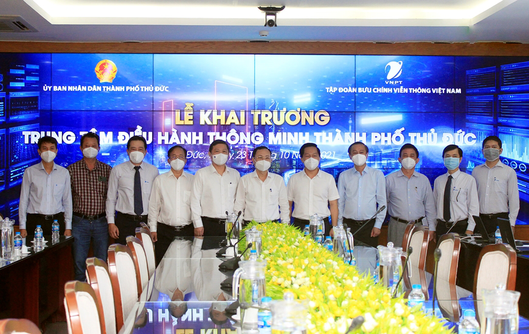

Chiều 21/01/2023 (nhằm 30 tết), đoàn lãnh đạo Quận
Bình Tân do đồng chí Huỳnh Khắc Điệp - Thành ủy
viên, Bí thư Quận ủy làm trưởng đoàn đến thăm ,
chúc Tết và tặng quà Bệnh viện quận Bình Tân nhân
dịp Tết Quý Mão 2023.
Tham dự sự kiện có các đồng chí: Dương Anh Đức, Phó
chủ tịch UBND TP Hồ Chí Minh; Nguyễn Văn Hiếu, Ủy
viên Dự khuyết Trung ương Đảng, Bí thư Thành ủy TP
Thủ Đức; Hoàng Tùng, Chủ tịch UBND TP Thủ Đức; Ngô
Xuân Trường, Trưởng đại diện Tập đoàn VNPT tại TP Hồ
Chí Minh, Giám đốc VNPT TP Hồ Chí Minh.

Các đại biểu tham dự lễ khai trương Trung tâm Điều
hành thông minh TP Thủ Đức.
TP Thủ Đức là dấu ấn lần đầu tiên thành lập thành
phố trong thành phố trực thuộc Trung ương. Để xây
dựng đô thị thông minh theo đúng định hướng, đáp ứng
tiêu chuẩn trong nước và quốc tế trong thời gian sớm
nhất, UBND TP Thủ Đức lựa chọn Tập đoàn VNPT xây
dựng Trung tâm Điều hành thông minh (IOC) là nhiệm
vụ đầu tiên hiện thực hóa thỏa thuận hợp tác chiến
lược giữa hai bên giai đoạn 2021-2026.
IOC là hệ thống cung cấp cho lãnh đạo TP Thủ Đức
cách nhìn toàn diện, tập trung, 360 độ về các hoạt
động đang diễn ra, thực hiện giám sát và quản lý
chất lượng dịch vụ một cách tổng thể, cho phép phân
tích dữ liệu lớn, hỗ trợ ra quyết định, xây dựng
phương án tổ chức, cơ chế, chính sách điều hành với
các tình huống cụ thể.
IOC TP Thủ Đức được triển khai với nhiều chức năng
trên mọi lĩnh vực điều hành quản lý: Hệ thống phân
tích dữ liệu kinh tế - xã hội, hệ thống giám sát
giải quyết thủ tục hành chính, hệ thống tiếp nhận
phản ánh của người dân, hệ thống quản lý văn bản
điện tử, hệ thống giám sát, điều hành an ninh trật
tự công cộng và giao thông, hệ thống giám sát thông
tin mạng xã hội, hệ thống quản lý dữ liệu không gian
địa lý “GIS”, dữ liệu ngành giáo dục, y tế… Tất cả
các lĩnh vực đã hoàn thiện và trung tâm được đưa vào
vận hành từ tháng 5-2021.
Lãnh đạo UBND TP Thủ Đức trao hoa cảm ơn đến đại
diện Tập đoàn VNPT.
Trong thời gian dịch bệnh Covid-19 diễn biến phức
tạp, IOC TP Thủ Đức đã phát huy được vai trò là “bộ
não số” của thành phố. Lãnh đạo TP Thủ Đức thực hiện
chỉ đạo công tác phòng, chống dịch bệnh trên cơ sở
phân tích dữ liệu qua ứng dụng GIS quản lý dịch bệnh
Covid-19: Phân tích không gian, quản lý các lớp dữ
liệu, thống kê báo cáo… Các tính năng này giúp quản
lý về số ca nhiễm, quản lý điểm phong tỏa, quản lý
vùng cách ly, cung cấp các thông tin về địa điểm,
địa chỉ lây nhiễm, sơ đồ lây nhiễm, thông tin cách
ly, phong tỏa, điều trị, xét nghiệm.
Tháng 8-2021, TP Thủ Đức phối hợp VNPT đã hoàn thành
tổng hợp dữ liệu, cung cấp hệ thống Dashboard thông
tin y tế, kinh tế phục vụ Trung tâm Điều hành dịch
bệnh và phục hồi kinh tế TP Thủ Đức. Các chỉ số được
phân tích và phản ánh sự biến động, cụ thể: Giám sát
tình hình dịch Covid-19, giám sát tình hình xét
nghiệm, tiêm vaccine, an sinh xã hội, dữ liệu điều
trị F0, giám sát tình hình hoạt động của doanh
nghiệp. Tất cả các dữ liệu đều thể hiện mối tương
quan trong phòng chống dịch bệnh và phục hồi kinh
tế. Dữ liệu được cập nhật biến động hàng ngày góp
phần hỗ trợ nhanh cho lãnh đạo TP Thủ Đức trong công
tác điều hành, quản lý.
Đến nay, IOC TP Thủ Đức cũng đánh dấu là Trung tâm
Điều hành thông minh đầu tiên cấp quận, huyện của TP
Hồ Chí Minh có đầy đủ 9 lĩnh vực đô thị thông minh
và phân hệ điều hành phòng, chống dịch bệnh và phục
hồi kinh tế. Trong giai đoạn tiếp theo, TP Thủ Đức
sẽ phối hợp cùng Tập đoàn VNPT tiếp tục bổ sung các
lĩnh vực mới, cần thiết, trọng tâm trên địa bàn.
Đồng thời, chú trọng thu thập, tinh chỉnh và hoàn
thiện dữ liệu thô, tích lũy và mở rộng dữ liệu theo
thời gian để làm giàu kho dữ liệu. Các bên cũng tận
dụng hiệu quả dữ liệu sẵn có, đưa vào công nghệ trí
tuệ nhân tạo, phân tích big data, mô hình dự báo,
chủ động, xây dựng các công cụ hỗ trợ ra quyết định…
đáp ứng kỳ vọng xây dựng thành công đô thị thông
minh TP Thủ Đức.
Lãnh đạo TP Thủ Đức trao hoa cảm ơn các tập thể, cá
nhân có đóng góp tiêu biểu trong xây dựng Trung tâm
Điều hành
thông minh.
Phát biểu tại buổi lễ, đồng chí Ngô Xuân Trường thay
mặt Tập đoàn VNPT chúc mừng TP Thủ Đức đã chính thức
đưa vào vận hành Trung tâm Điều hành thông minh,
đồng thời nhấn mạnh: “Đây là tiền đề quan trọng để
hai bên nhanh chóng xây dựng chính quyền điện tử và
đô thị thông minh tại TP Thủ Đức trong thời gian tới
theo đúng các mục tiêu đã được đề ra trong thỏa
thuận hợp tác xây dựng đô thị thông minh giai đoạn
2021-2026 của UBND TP Thủ Đức và Tập đoàn VNPT. Về
phía Tập đoàn VNPT, cam kết sẽ huy động đội ngũ
chuyên gia tốt nhất, áp dụng các công nghệ hiện đại
vào việc triển khai thực hiện các hạng mục đã được
thống nhất nhằm bảo đảm hiệu quả
Nguồn: qdnd.vn
Tags
Thành phố thủ đức / UBND TP Thủ Đức / công nghệ
hiện đại / đô thị thông minh / Công nghệ thông tin
/ giải pháp công nghệ thông tin / hợp tác xây dựng
/ đô thị thông minh TP Thủ Đức / trí tuệ nhân tạo
/ mô hình dự báo / Trung tâm Điều hành